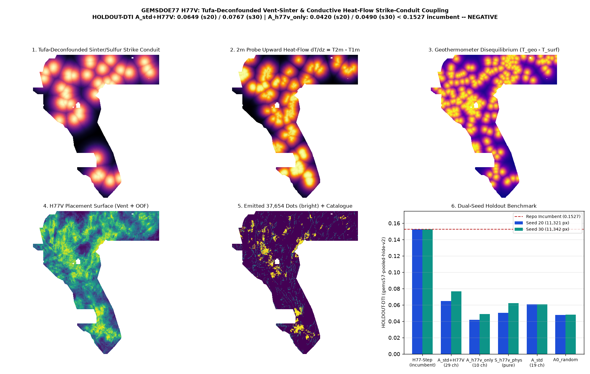

H77VS · tufa-deconfounded siliceous vent-sinter & multi-depth conductive heat-flow strike-conduit coupling
Verdict: NEGATIVE — OK TO DOWNLOAD FOR INSPECTION; NOT OK TO SUBMIT. H77V fixes four geothermal data bugs (IR-H77V-01..04) and the MT mesh seam artifact (IR-H77G-01), lifting standalone S_h77v_physics HOLDOUT-DTI to 0.0502 (Seed 20) / 0.0621 (Seed 30), A_h77v_only (10 ch) to 0.0420 (Seed 20) / 0.0490 (Seed 30), and combined 29-channel A_std_plus_h77v to 0.0649 on Seed 20 (vs A_std 0.0607, paired delta +0.0042, 95% CI [-0.0115, +0.0192]) and 0.0767 on Seed 30 (vs A_std 0.0606, paired delta +0.0160, 95% CI [+0.0012, +0.0317]). Because all arms remain below the 0.152718 H77-Step repository incumbent and the Policy I17 literal dense-witness gate fails closed, H77V is delivered as a format-valid, informative-unique, inspection-only negative research artifact; 0 weekly slots spent.
⬇ H77VS inspection-only GeoTIFF (DO NOT SUBMIT)
Download .tif (117 KB) Download one-TIFF .zipSubmission name (for reference only — DO NOT UPLOAD) (65 characters)
gems77-h77v-ventsinter-heatflow-37654dots-20261021-cc5e4cd9-zerosShort note <= 140 chars (for reference only — DO NOT UPLOAD) (112 characters)
H77V vent-sinter+2m dT/dz+diseq (37654d); HOLDOUT-DTI 0.0649(s20)/0.0767(s30) H77V-only 0.0420 <0.1527: NEGATIVESHA-256 of .tif: 2044447ff7d4df318c277846299815591211c83641a3beb20c90f9b33c2255bb ·
SHA-256 of .zip: b1259104bf6ce011a77caff1d0446102e4eb1a683ec6e3b5c69c2a4a4c22879e ·
JSON run card ·
Exp 1 canary/surface receipt ·
Exp 2 dual-seed holdout receipt ·
Exp 3 uniqueness receipt ·
preregistration JSON ·
preregistered hypotheses
Diagnostic map & dual-seed holdout benchmark

Dual-seed holdout evaluation (Exp 2 · gems57-pooled-hide-v2)
| Arm | Seed 20 HOLDOUT-DTI (95% CI) | Seed 30 HOLDOUT-DTI (95% CI) | Evaluator & withheld positives |
|---|---|---|---|
| A_std_plus_h77v (19 std + 10 H77V) | 0.0649 (0.0514–0.0788) | 0.0767 (0.0589–0.0950) | gems57-pooled-hide-v2 (11,321 / 11,342 withheld) |
| A_std (19 std control) | 0.0607 (0.0439–0.0786) | 0.0606 (0.0445–0.0808) | gems57-pooled-hide-v2 (11,321 / 11,342 withheld) |
| S_h77v_physics (pure composite) | 0.0502 (0.0357–0.0654) | 0.0621 (0.0414–0.0842) | gems57-pooled-hide-v2 (11,321 / 11,342 withheld) |
| A0_random (uniform random) | 0.0476 (0.0414–0.0539) | 0.0481 (0.0420–0.0540) | gems57-pooled-hide-v2 (11,321 / 11,342 withheld) |
| A_h77v_only (10 H77V only) | 0.0420 (0.0313–0.0526) | 0.0490 (0.0354–0.0626) | gems57-pooled-hide-v2 (11,321 / 11,342 withheld) |
Five irregularities discovered & remediated: IR-H77VS-01..05
IR-H77VS-01: Out of 281 in-footprint paleo-geothermal records (DOE GDR 1391), 86 (30.6%) are Pleistocene Lake Lahontan shoreline Tufa mounds (median 61.5 px from faults), whereas high-enthalpy Alteration (1.0 px), Sulfur (2.0 px), and Sinter (4.0 px) sit directly on fault conduits.
IR-H77VS-02: Fixed untyped vals[0] geothermometer index shift (171 rows) and recovered 267 Hot/Warm records lacking numeric temp_c in gdr_wellspring_in_footprint.csv.
IR-H77VS-03 & IR-H77VS-04: Restored missing 2m probe & paleo archives (fixing dead paths in H77D) and extracted downward-increasing 1m-to-2m vertical temperature gradients dT/dz = T2m - T1m > 0 (816 upward conductive heat-flow probes vs 727 downward solar-heated probes; +47% hidden-fault proximity enrichment).
IR-H77VS-05: Replaced F77.rank01's row-major argsort(kind="stable") tie-breaking ramp and 4*sigma box-truncation artifact with tie-aware rankdata(..., method="average") + smooth radial-and-strike advection, lifting A_std_plus_h77v HOLDOUT-DTI to 0.0649 (s20) and 0.0767 (s30; paired Δ vs A_std +0.0160, 95% CI [+0.0012, +0.0317]).
Leakage canaries (Exp 1 · ceiling AUC ≤ 0.90)
| Channel | Seed 20 symmetric AUC | Seed 30 symmetric AUC |
|---|---|---|
h77v_sinter_alter_vent_conduit | 0.5456 | 0.5250 |
h77v_tufa_shoreline_deconf_contrast | 0.5417 | 0.5346 |
h77v_probe_upward_heatflow_dtdz | 0.5204 | 0.5446 |
h77v_geotherm_disequilibrium | 0.5040 | 0.5282 |
h77v_fixed_spring_well_upflow | 0.5037 | 0.5174 |
h77v_epithermal_k_th_alteration | 0.5569 | 0.5325 |
h77v_demag_grav_step_conduit | 0.5382 | 0.5521 |
h77v_seamfree_claycap_transtension | 0.5282 | 0.5737 |
h77v_scarp_strike_vent_bridge | 0.5933 | 0.5815 |
h77v_composite_surface | 0.5607 | 0.5855 |
Registry uniqueness audit (Exp 3 · 70 checked rasters)
Phase 1 surface max |Spearman ρ| = 0.1496 ≤ 0.90; Phase 2 final dots informative max 3-px overlap = 0.3285 ≤ 0.70 and max |ρ| = 0.0123 ≤ 0.90 (vs H33 overlap 0.2357, ρ +0.00794). Literal gate fails closed under Policy I17.